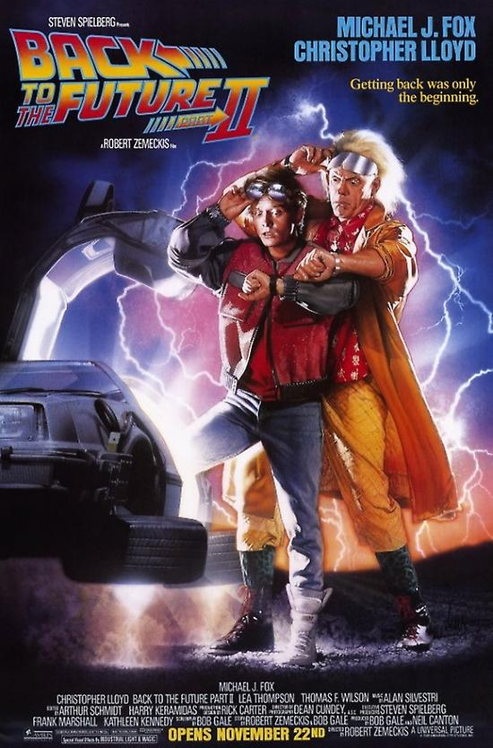
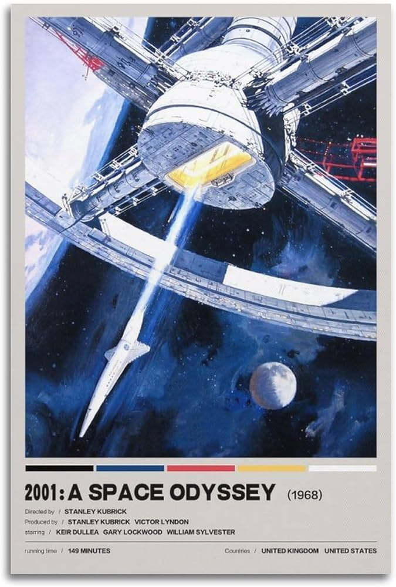
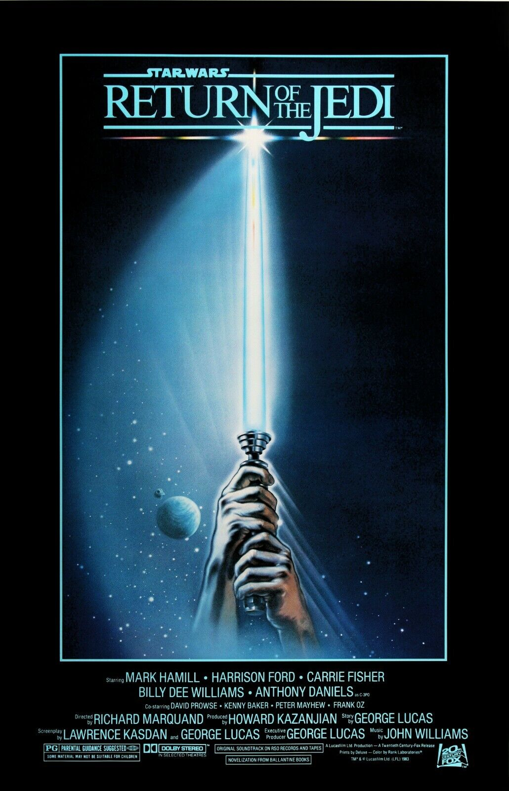

-The Lord of the Rings-

The Lord of the Rings is an epic high fantasy novel by the English author and scholar J. R. R. Tolkien. Set in Middle-earth, the story began as a sequel to Tolkien's 1937 children's book The Hobbit, but eventually developed into a much larger work. Written in stages between 1937 and 1949, The Lord of the Rings is one of the best-selling books ever written, with over 150 million copies sold.
-Back to the Future-
Back to the Future is a 1985 American science fiction film directed by Robert Zemeckis and written by Zemeckis and Bob Gale. It stars Michael J. Fox, Christopher Lloyd, Lea Thompson, Crispin Glover, and Thomas F. Wilson. Set in 1985, it follows Marty McFly (Fox), a teenager accidentally sent back to 1955 in a time-traveling DeLorean automobile built by his eccentric scientist friend Emmett "Doc" Brown (Lloyd), where he inadvertently prevents his future parents from falling in love – threatening his own existence – and is forced to reconcile them and somehow get back to the future.
-The Dark Knight-

The Dark Knight is a 2008 superhero film directed by Christopher Nolan from a screenplay co-written with his brother Jonathan. Based on the DC Comics superhero Batman, it is the sequel to Batman Begins (2005) and the second installment in The Dark Knight Trilogy. The plot follows the vigilante Batman, police lieutenant James Gordon, and district attorney Harvey Dent, who form an alliance to dismantle organized crime in Gotham City. Their efforts are derailed by the Joker, an anarchistic mastermind who seeks to test how far Batman will go to save the city from chaos. The ensemble cast includes Christian Bale, Michael Caine, Heath Ledger, Gary Oldman, Aaron Eckhart, Maggie Gyllenhaal, and Morgan Freeman.
-2001: A Space Odyssey-
2001: A Space Odyssey is a 1968 epic science fiction film produced and directed by Stanley Kubrick. The screenplay was written by Kubrick and science fiction author Arthur C. Clarke, and was inspired by Clarke's 1951 short story "The Sentinel" and other short stories by Clarke. Clarke also published a novelisation of the film, in part written concurrently with the screenplay, after the film's release. The film stars Keir Dullea, Gary Lockwood, William Sylvester, and Douglas Rain and follows a voyage by astronauts, scientists, and the sentient supercomputer HAL to Jupiter to investigate an alien monolith. The film is noted for its scientifically accurate depiction of space flight, pioneering special effects, and ambiguous imagery. Kubrick avoided conventional cinematic and narrative techniques; dialogue is used sparingly, and there are long sequences accompanied only by music. The soundtrack incorporates numerous works of classical music, including pieces by composers such as Richard Strauss, Johann Strauss II, Aram Khachaturian, and György Ligeti.
-The Shawshank Redemption-

The Shawshank Redemption is a 1994 American prison drama film written and directed by Frank Darabont, based on the 1982 Stephen King novella Rita Hayworth and Shawshank Redemption. The film tells the story of banker Andy Dufresne (Tim Robbins), who is sentenced to life in Shawshank State Penitentiary for the murders of his wife and her lover, despite his claims of innocence. Over the following two decades, he befriends a fellow prisoner, contraband smuggler Ellis "Red" Redding (Morgan Freeman), and becomes instrumental in a money laundering operation led by the prison warden Samuel Norton (Bob Gunton). William Sadler, Clancy Brown, Gil Bellows, and James Whitmore appear in supporting roles.
-Star Wars-
Return of the Jedi (also known as Star Wars: Episode VI – Return of the Jedi) is a 1983 American epic space opera film directed by Richard Marquand. The screenplay is by Lawrence Kasdan and George Lucas from a story by Lucas, who was also the executive producer. The sequel to Star Wars (1977) and The Empire Strikes Back (1980), it is the third installment in the original Star Wars trilogy, the third film to be produced, and the sixth chronological film in the "Skywalker Saga". The film stars Mark Hamill, Harrison Ford, Carrie Fisher, Billy Dee Williams, Anthony Daniels, David Prowse, Kenny Baker, Peter Mayhew and Frank Oz. Set one year after The Empire Strikes Back, the Galactic Empire is constructing a second Death Star to exterminate the Rebel Alliance. After Luke Skywalker and his friends free Han Solo from Jabba the Hutt, the Rebel fleet launches an attack on the Death Star in hopes of destroying both it and the Emperor, while Luke struggles to bring his father, Darth Vader, back to the light side of the Force.
-Matrix-

The Matrix is a 1999 science fiction action film written and directed by the Wachowskis. It is the first installment in the Matrix film series, starring Keanu Reeves, Laurence Fishburne, Carrie-Anne Moss, Hugo Weaving, and Joe Pantoliano, and depicts a dystopian future in which humanity is unknowingly trapped inside the Matrix, a simulated reality that intelligent machines have created to distract humans while using their bodies as an energy source. When computer programmer Thomas Anderson, under the hacker alias "Neo", uncovers the truth, he joins a rebellion against the machines along with other people who have been freed from the Matrix.
-Finding Nemo-

Finding Nemo is a 2003 American animated comedy-drama adventure film produced by Pixar Animation Studios for Walt Disney Pictures. Directed by Andrew Stanton (in his feature directorial debut) with co-direction by Lee Unkrich, the screenplay was written by Stanton, Bob Peterson, and David Reynolds from a story by Stanton. The film stars the voices of Albert Brooks, Ellen DeGeneres, Alexander Gould, Willem Dafoe, and Geoffrey Rush. It tells the story of an overprotective clownfish named Marlin (Brooks) who, along with a forgetful regal blue tang named Dory (DeGeneres), searches for his missing son Nemo (Gould). Along the way, Marlin learns to take risks and comes to terms with Nemo taking care of himself.